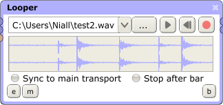
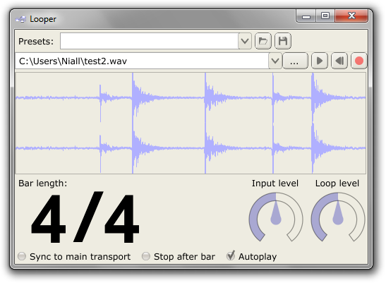
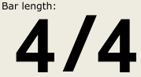
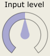
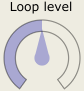
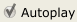

Looper Processor

The Looper processor is designed to easily record and play back seamless loops of audio. Theoretically those loops can be of infinite length, but in practice it will be limited by the capabilities of your machine (primarily RAM). Audio is saved as .wav or .aiff files and can be loaded and played back at a later date. The processor's input audio is always mirrored to its output, though the level of that audio can be altered.
The main controls are as follows:
This is used to select a sound file to save the recorded audio to. If that file already exists and contains audio, that audio will be loaded into the looper.

Starts the file playing from the looper's current position within the file. If the file is already playing, clicking the button will pause it. Playback will loop until the user pauses it.

Returns the looper's position within the file to the start of the file.
Starts and stops recording.

If this is toggled on, the looper's transport (the play/pause and return-to-zero buttons) will be synced to the app's main transport (the two buttons in the centre of the lower panel in the main window). This means that hitting play on the main transport will start the looper playing, and can be used to start multiple Loopers, File Players etc. playing at the same time.
If this is toggled on, the looper will stop recording once a whole bar has elapsed, based on the pedalboard's global tempo and the Bar Length setting in the processor's editor window (see below).
Additional Editor Window Controls
In addition to the above controls, the looper exposes a number of extra controls in its editor window.

These controls are as follows:

This sets the length of the bar specified by the Stop after bar control. As such it can easily be used to e.g. record multiple bars in a 4/4 track by simply multiplying the numerator by the required amount (i.e. 4 bars of 4/4 is 16/4).

This controls the level of the processor's input audio as it appears at the processor's output. It does not effect the level of the audio which will be recorded.

This controls the level of the processor's recorded loop audio.

If this is toggled on, the looper will automatically start playing back the loop as soon as recording is halted.